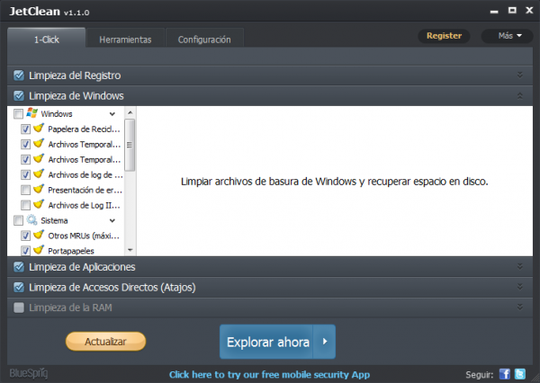

-OTROS PROGRAMAS EXTERNOS-
Argente Disk Cleaner: es un limpiador de archivos basura hispanohablante. Además de los navegadores y carpetas del sistema, busca basura de más de 150 programas. Su presentación es impecable y está en buen español. No ofrece herramientas extra.
BleachBit: es el limpiador más sencillo de la comparativa. Su ventana consta de una columna de casillas para cada ámbito a limpiar y de una ventana que explica cada opción. Está en español y también tiene una versión portable.
Wise Disk Cleaner: es un limpiador de archivos que cuenta con una larga trayectoria. Su última versión tiene un aspecto magnífico y está traducida al español. En las opciones se puede activar el borrado seguro de los ficheros.
JetClean: es un limpiador de tercera generación. Su entrada en escena fue impresionante, tanto que le dedicamos un análisis a fondo y un duelo con CCleaner, del cual salió casi victorioso. Está en español y tiene numerosas herramientas extra.

TuneUp: abarca todos los ámbitos de limpieza y optimización de Windows. La limpieza de archivos basura es solo una de sus muchísimas funciones (tiene más de 30). Quisimos ponerla a prueba y compararla a la de los demás limpiadores.
FCleaner: es según muchos un calco de CCleaner; para otros, una de las mejores alternativas. Tiene las mismas herramientas, pero un aspecto distinto. Para instalar la traducción al español hay que descargar un archivo aparte. Hay versión portable.